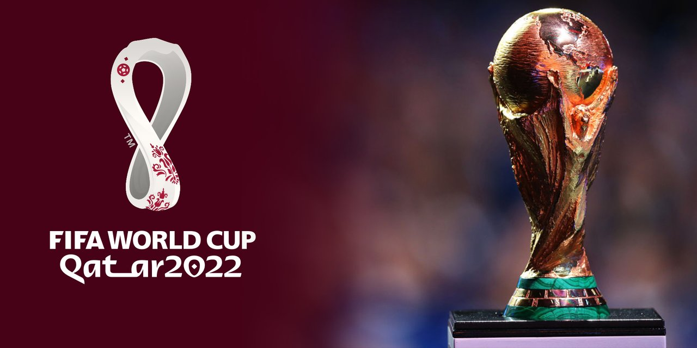

Award-winners

Golden Ball
Lionel Messi won Golden Ball, the best player award, at the 2022 Fifa World Cup in Qatar Sunday night.
Golden Boot
France's Kylian Mbappe won the Golden Boot award at Qatar 2022 courtesy his hat-trick in the final.
Golden Glove
Emiliano Martinez collected the Golden Glove award after helping Argentina to glory at the FIFA World Cup 2022.